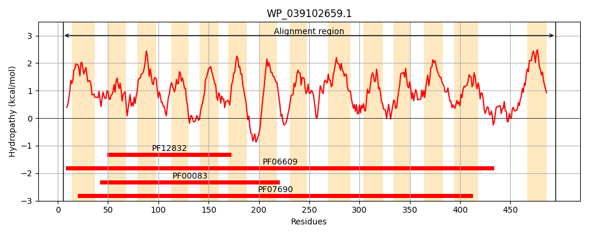
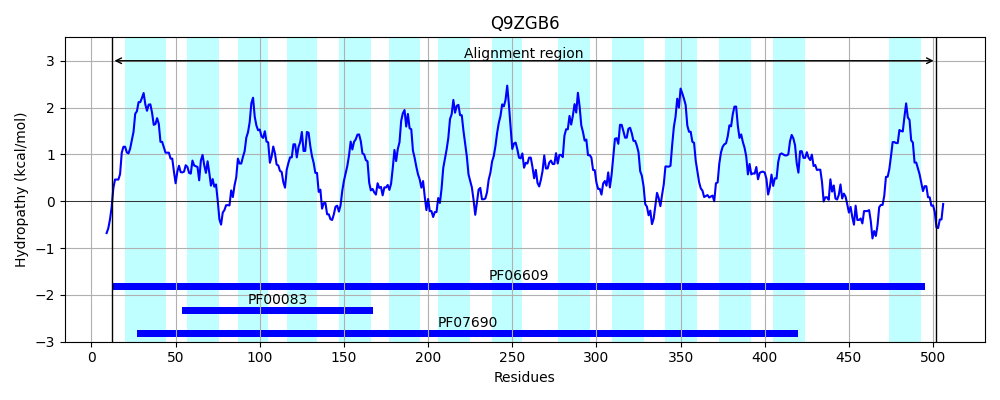
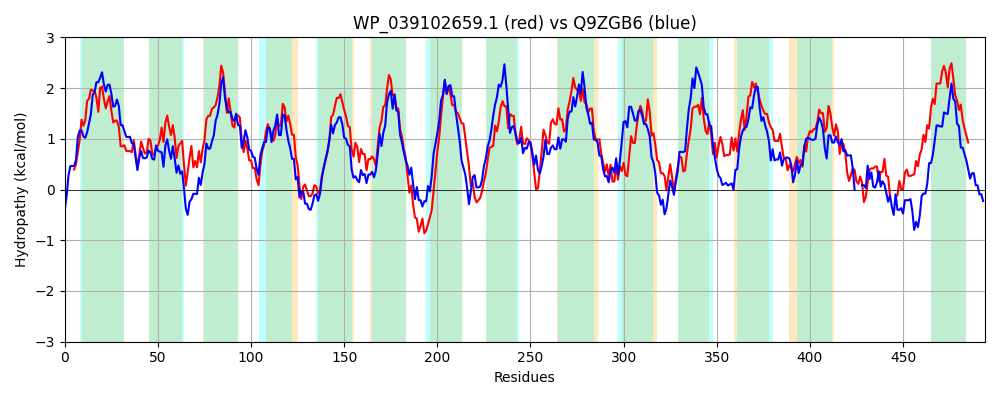

Hit Accession: Q9ZGB6
Hit TCID: 2.A.1.3.32
Hit Description: gnl|BL_ORD_ID|19609 gnl|TC-DB|Q9ZGB6|2.A.1.3.32 LanJ OS=Streptomyces cyanogenus GN=lanJ PE=4 SV=1
Mach Len: 494
e:0.000000
Query TMS Count : 14
Hit TMS Count: 14
TMS-Overlap Score: 13.250000
Predicted Substrates:CHEBI:70064;Landomycin A
BLAST Alignment:
Score: 916 , Bit scores: 357 bits, E-value: 2.0e-118, Alignment length: 494, Percentage identity: 38
Query: 5 VANPPVQSIRLLFSALLLVMLLSALDQTIVSTALPTIVGELGGLDKLSWVVTAYILSSTIAVPLYGKFGDLFGRKIVLQVAIGLFLVGSVLCGLAQNMTQLVLMRGLQGLGGGGLMVISMAAVADVIPPANRGRYQGLFGGVFGLATVIGPLIGGFLVQHASWRWIFYINLPLGLFALLVIGAVFHSSNKRSQHQIDWLGAIYLSMALLCIILFTSEGGSVHAWNDPQLWCILAFGIVGIIGFMYEERIAIEPIIPLALFRNRSFLLCSLIGFVIGMSLFGSVTFLPLYLQVVKEATPTEAGLQLIPLMGGLLLTSIISGRIISRTGKYRLFPILGTLLGVTGMVLLTRITIHSPLWQLYLFTGVLGAGLGLVMQVLVLAVQNAMPAQMYGVATSGVTLFRSIGGSIGVALFGAVFTHVLQSNLQKLLPEGAVLPPGMNPVAVQ---HLPADIRLDYLDAFGAAIHAAFLMAACIMAVAFVLSWLLKEAPLKTA 495
V PP + + + +A ++ MLL+ALD I+ TA+PTIVGELGGL+ LSWV +AY+L++ P++GK GD++GRK V +I LFL GSV+ GLAQ+M QL+ R LQGLG GGLMV +++ + +++ P RG++Q + V G+A V GPL GGFL H WR+ FY+N+P GL A + I +RSQ ID+LGA L+ + ++L T+ GG + W+ P + ++A + G ER A+ P++PL +FR+ +F +++ F+ G + ++TFLP+Y Q V+ A+ + AGL ++PL+ G++ T+ G+++S+ G ++L+ I G +L + G++LL+ + + + + V G GLGL+MQV + ++ + GVA+S VTL R+IGG+ GV+L G +F + + + G + +N ++ + LP +R Y A H AFL + + A A SW +K P A
Sbjct: 12 VVAPPNRRLFAVMTAAVVAMLLAALDSLILGTAMPTIVGELGGLEHLSWVASAYMLATAATTPIWGKLGDMYGRKGVFLTSIALFLAGSVVAGLAQSMGQLIGCRVLQGLGSGGLMVGALSLIGELVTPRERGKFQAMSSAVMGVAMVGGPLAGGFLTDHLGWRYCFYVNVPFGLAAFVTIAVALKLPKRRSQAPIDYLGAALLAAVITSLVLVTTWGGRQYDWSSPVIIGLIAIAVAGAFTLPAVERRAVAPVLPLTVFRSANFSWANVVSFLFGFVMVAAMTFLPIYQQTVQGASASSAGLLMLPLLLGMVGTNAFGGQLMSKQGNFKLYAIAGGVLLLAGILLLSLMDTKTGRLETGTYMVVFGVGLGLLMQVTLSVAMESVEMKDLGVASSMVTLTRTIGGAFGVSLAGIIFNERVTAGMG---AAGGAMGGDINRLSAESLLKLPEPVREVYEKAVADGTHWAFLTVSVVAAAALAASWFIKARPKSAA 502 | Protein Hydropathy Plots: |
|---|
|  |  |
Pairwise Alignment-Hydropathy Plot:
|
|---|
|  |